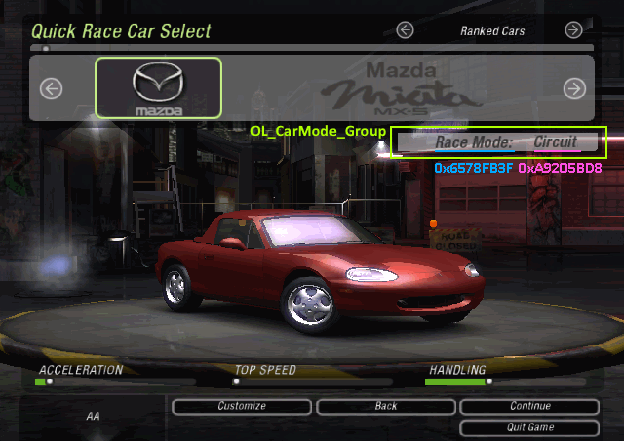

blog > Customizing preset cars (2023 August 6)
The game data files include some cars with predefined tuning. Examples of these are Rachel's car you start career mode with, Caleb's car, sponsor cars... Each preset also has a name (name), here are all of them that are present in my game (I expect this to be the same in every game version):
DDAY_PLAYER_CAR: Rachel's car that you start with in career mode
DDAY_PLAYER_CAR_OLD_RX8: I guess an earlier version of Rachel's car
DDAY_PLAYER_CAR_OLD: I guess an earlier version of Rachel's car. This one is a Lancer Evo 8
DEMO_AI_IMPREZAWRX_WHITE: AI car preset from the demo release
DEMO_AI_IMPREZAWRX_BLUE: AI car preset from the demo release
DEMO_AI_300GT_ORANGE: AI car preset from the demo release
DEMO_AI_300GT_BLUE: AI car preset from the demo release
DEMO_AI_350Z_SILVER: AI car preset from the demo release
DEMO_AI_350Z_BROWN: AI car preset from the demo release
TT_AI_PRESET_1: is this used?
G35_AI_PRESET_1: is this used?
LANCEREVO8_AI_PRESET_1: is this used?
350Z_AI_PRESET_1: is this used?
CALEB_GTO: Caleb's car, the final boss
NIKKI_MUSTANGGT: Caleb's crew car. Is this used?
NIGEL_3000GT: Caleb's crew car. Is this used?
TOM_G35: Caleb's crew car. Is this used?
AL_RX8: Caleb's crew car. Is this used?
MARCUS_CELICA: Caleb's crew car. Is this used?
SCOTT_TT: Caleb's crew car. Is this used?
DEMO_PRESET_1: Car that you could drive in the demo release
DEMO_PRESET_2: Car that you could drive in the demo release
DEMO_PRESET_3: Car that you could drive in the demo release
DEMO_PRESET_4: Car that you could drive in the demo release
CHINGY: sponsor car, cheat gimmechingy
CAPONE: sponsor car, cheat wannacapone
D3: sponsor car, cheat wantmyd3
SHINESTREET: sponsor car, cheat shinestreetbright
DAVIDCHOE: sponsor car, cheat devidchoeart
JAPANTUNING: sponsor car, cheat tunejapantuning
SNOOP_DOGG: sponsor car, cheat yodogg
THE_DOORS: sponsor car, cheat opendoors
If you don't know, the sponsor cars can be unlocked by typing the cheat during boot, when the "press enter to continue" Rachel screen is shown. A sound effect will play after entering succesfully. Then the "SPONSOR CARS" category can be chosing in the quick race menu, where they will be available to use for a single race.
These preset cars are cool things one can never really access in the game (at least not the ones that are unused), so it would be cool to be able to add them to your car collection like I did with Customizing sponsor cars.
Using them in quick race immediately without having to add them to your car collection would also be cool, but is for a future time.
See nfsu2-re-hooks/fun-car-customize-preset.c for all the code together.
To do this, we'll have to add entries for the preset cars when selecting a car to customize. The idea is to add a separate category which will contain all preset cars. This can be done by hooking into function CarSelectFNGObject::ChangeCategory, which is used to determine what category of cars to show when the prev/next arrow buttons are pressed.
This car selection screen is used for a few different reasons: selecting quick race car, selecting car to customize, selecting car in online mode (not career car select, that one has a dedicated screen). So we're gonna add the custom category in the category rotation, but only if car selection is being done for choosing a car to customize:
// make up a new unique value that doesn't exist in enum INVENTORY_CAR_FLAGS for our category #define CUSTOM_IS_PRESET_CAR 0x20 static int fun_car_customize_preset_CarSelectFNGObject__ChangeCategory(struct CarSelectFNGObject *this, void *_, unsigned int message) { #define MSG_PREV 0x5073EF13 #define MSG_NEXT 0xD9FEEC59 if (profileData->menuState == MENU_STATE_CAR_CUSTOMIZE) { if (message == MSG_PREV) { switch (carSelectCategory) { case IS_STOCK_CAR | IS_TUNED_CAR: carSelectCategory = CUSTOM_IS_PRESET_CAR; break; case CUSTOM_IS_PRESET_CAR: if (CarSelectFNGObject::CountAvailableCars(this, IS_TUNED_CAR))) { carSelectCategory = IS_TUNED_CAR; break; } case IS_TUNED_CAR: carSelectCategory = IS_STOCK_CAR; break; case IS_STOCK_CAR: carSelectCategory = IS_STOCK_CAR | IS_TUNED_CAR; break; } } else if (message == MSG_NEXT) { switch (carSelectCategory) { case IS_STOCK_CAR | IS_TUNED_CAR: carSelectCategory = IS_STOCK_CAR; break; case IS_STOCK_CAR: if (CarSelectFNGObject::CountAvailableCars(this, IS_TUNED_CAR))) { carSelectCategory = IS_TUNED_CAR; break; } case IS_TUNED_CAR: carSelectCategory = CUSTOM_IS_PRESET_CAR; break; case CUSTOM_IS_PRESET_CAR: carSelectCategory = IS_STOCK_CAR | IS_TUNED_CAR; break; } } profileData->player1[profileData->currentPlayerIndex?].d4.currentCarSelectionCategory = carSelectCategory; CarSelectFNGObject::ResetBrowableCars(this); CarSelectFNGObject::UpdateUI(this); return 1; } return 0; } static __declspec(naked) void fun_car_customize_preset_CarSelectFNGObject__ChangeCategory_hook(unsigned int message) { _asm { push ecx call fun_car_customize_sponsor_CarSelectFNGObject__ChangeCategory test eax, eax jnz ok // we were not in customize menu, call the normal function // but first do the thing that we overwrote in order to jmp to this proc pop ecx mov eax, carSelectCategory mov edx, 0x4EED15 // edx can be used because it's overridden later in that proc anyways jmp edx ok: add esp, 4 retn 0x4 } } mkjmp(0x4EED10, fun_car_customize_preset_CarSelectFNGObject__ChangeCategory_hook);
This won't have much effect other than messing up the category changing rotation. Because we're using a car flag that doesn't exist, no cars will be matched so the category would have no cars. The CarSelectFNGObject::ResetBrowableCars function takes care of such situations and makes the category fall back to "all cars" should this happen, because empty categories should not be possible to be selected (the game would crash if there's no car to show).
Two things need to happen to do this:
Execution > Filling the preset car category with car entries
CarCollectionWithPointers::CountAvailableCars counts the amount of available cars in the player's struct CarCollection. Since preset cars are of course not part of this, we'll have to add some code here to make sure it works for preset cars.
static __declspec(naked) void fun_car_customize_preset_CarCollection__CountAvailableCars_hook(enum INVENTORY_CAR_FLAGS flagsToCheck, int typeToCheck) { _asm { test [esp+4], CUSTOM_IS_PRESET_CAR jnz its_preset // not preset, return back where we hooked from (but do the things we overwrote first) sub esp, 8 push ebx mov ebx, [esp+0xC+8] mov eax, 0x534858 jmp eax its_preset: // not sure if we really need to count or just return nonzero to make things happy, but lets do a real count or eax, 0xFFFFFFFF mov ecx, offset carPresets next: inc eax mov ecx, [ecx] // struct CarPreset.link.next cmp ecx, offset carPresets jnz next retn 8 } } mkjmp(CarCollectionWithPointers::CountAvailableCars, fun_car_customize_preset_CarCollection__CountAvailableCars_hook);
Execution > Filling the preset car category with car entries
CarCollectionWithPointers::FindCarWithFlagAfterGivenCar is used to iterate cars. Only cars with the given flag should be considered, and it should return the first car if
the givenCar argument is NULL, otherwise the car that comes after it or NULL if it was the last available car.
// my game has 32, assuming all versions will have the same ones #define MAX_PRESET_CARS 32 struct SponsorCar presetCarAsInventoryCar[MAX_PRESET_CARS]; int numPresetCars; static struct InventoryCar * __stdcall FindPresetCarAfterGivenCar(enum INVENTORY_CAR_FLAGS flagsToCheck, struct InventoryCar *givenCar) { struct SponsorCar *s; struct CarPreset *p; int i; char buf[32]; // initialize our SponsorCar instances with CarPreset data, this is only needed once // so use the numPresetCars variables as a check to see if this was done already or not. if (!numPresetCars) { p = (void*) carPresets; for (i = 0; (p = (void*) p->link.next) != (void*) carPresets && i < MAX_PRESET_CARS; i++) { sprintf(buf, "STOCK_%s", p->modelName); s = presetCarAsInventoryCar + numPresetCars++; s->__parent.vtable = (void*) sponsorCar$vtable; s->__parent.field_4 = 0; s->__parent.slotHash = cihash(buf); s->__parent.floatField_C = 0.0f; s->__parent.field_10 = 0; s->__parent.flags = CUSTOM_IS_PRESET_CAR; s->carPresetHash = cihash(p->name); } } if (!givenCar) { return &presetCarAsInventoryCar->__parent; } p = (void*) carPresets; // (CarPreset's link is at offset 0) for (i = 0; i < numPresetCars - 1; i++) { if (presetCarAsInventoryCar + i == (void*) givenCar) { return (void*) (presetCarAsInventoryCar + i + 1); } } return NULL; } static __declspec(naked) struct InventoryCar * fun_car_customize_preset_CarCollection__FindCarWithFlagAfterGivenCar_hook(enum INVENTORY_CAR_FLAGS flagsToCheck, struct InventoryCar *givenCar) { _asm { test [esp+4], CUSTOM_IS_PRESET_CAR jnz its_preset // not preset, return back where we hooked from (but do the things we overwrote first) push ebx push esi push edi mov edi, [esp+0x14] mov eax, 0x5162D7 jmp eax its_preset: jmp FindPresetCarAfterGivenCar } } mkjmp(CarCollectionWithPointers::FindCarWithFlagAfterGivenCar, fun_car_customize_preset_CarCollection__FindCarWithFlagAfterGivenCar_hook);
I'm making instances here of struct SponsorCar to return, because it seems like the best fit as sponsor cars are also created from preset cars.
Execution > Filling the preset car category with car entries
If you now go to the customization menu, select the preset car category, escape and go to quick race car select, you see the preset car category is still selected. This is because the last selected category (and car even) gets remembered. This is bad because selecting a preset car in the quick race menu will make the game crash when continuing.
I don't know/remember where exactly it gets reset when different menus are shown, but it sure looks like this isn't being reset, possibly because we added a totally new category. So let's ensure we reset the category, and the easiest place to do this - I think - is in the CountAvailableCars function.
static __declspec(naked) void fun_car_customize_preset_CarCollection__CountAvailableCars_hook(enum INVENTORY_CAR_FLAGS flagsToCheck, int typeToCheck) { _asm { test [esp+4], CUSTOM_IS_PRESET_CAR jnz its_preset // not preset, return back where we hooked from (but do the things we overwrote first) sub esp, 8 push ebx mov ebx, [esp+0xC+8] mov eax, 0x534858 jmp eax its_preset: + + // Need to ensure that our custom "preset cars" category cannot be selected unless we're in the + // customize menu. Otherwise one can go to customize, select preset cars, escape, go to quick + // race, and preset cars will still be selected which is no good (we don't handle that so it will + // crash the game once chosen). And once we're in our custom category, there's no way out (in the + // non-customize menus), because they cycle between known values and our custom category is not a + // known value. This is a good place, because the car select will fall back to the "all cars" category + // if the CountAvailableCars function returns 0 with the initially applied car filter. + mov eax, offset profileData + test [eax+0x156A8], MENU_STATE_CAR_CUSTOMIZE // struct ProfileData.menuState + jnz ok + // uh-oh, we're not in customize menu. Return zero to trigger the fallback that will reset the + // category to "all cars". + xor eax, eax + retn 8 + ok: // not sure if we really need to count or just return nonzero to make things happy, but lets do a real count or eax, 0xFFFFFFFF mov ecx, offset carPresets next: inc eax mov ecx, [ecx] // struct CarPreset.link.next cmp ecx, offset carPresets jnz next retn 8 } }
Execution > Filling the preset car category with car entries (continuation)
Now preset cars can be selected but you'll see it will not have tuning applied and just give you a stock car instance.
This is because struct SponsorCar.__parent.slotHash is being set to STOCK_%s. Sponsor cars would have this set to SPONSOR_%s,
so CarCollectionWithPointers::GetCarForSlot will return the correct instance, but we need some more extra code to make this work for all preset cars.
In the previous code, instead of using the STOCK_%s hash,
I'm gonna simply use the index of the preset car as 'hash':
static struct InventoryCar * __stdcall FindPresetCarAfterGivenCar(enum INVENTORY_CAR_FLAGS flagsToCheck, struct InventoryCar *givenCar) { struct SponsorCar *s; struct CarPreset *p; int i; - char buf[32]; // initialize our SponsorCar instances with CarPreset data, this is only needed once // so use the numPresetCars variables as a check to see if this was done already or not. if (!numPresetCars) { p = (void*) carPresets; for (i = 0; (p = (void*) p->link.next) != (void*) carPresets && i < MAX_PRESET_CARS; i++) { - sprintf(buf, "STOCK_%s", p->modelName); s = presetCarAsInventoryCar + numPresetCars++; s->__parent.vtable = (void*) sponsorCar$vtable; s->__parent.field_4 = 0; - s->__parent.slotHash = cihash(buf); + s->__parent.slotHash = i; s->__parent.floatField_C = 0.0f; s->__parent.field_10 = 0; s->__parent.flags = CUSTOM_IS_PRESET_CAR; s->carPresetHash = cihash(p->name); } } if (!givenCar) { return &presetCarAsInventoryCar->__parent; } p = (void*) carPresets; // (CarPreset's link is at offset 0) for (i = 0; i < numPresetCars - 1; i++) { if (presetCarAsInventoryCar + i == (void*) givenCar) { return (void*) (presetCarAsInventoryCar + i + 1); } } return NULL; }
This will make the game crash when browing preset cars because at some point CarCollectionWithPointers::GetCarForSlot will be called with that
hash and it will return NULL which is not supposed to happen. So let's fix that.
static __declspec(naked) struct SponsorCar * fun_car_customize_preset_CarCollection__GetCarForSlot_hook(unsigned int slotHash) { _asm { mov eax, [numPresetCars] cmp [esp+4], eax jb its_preset push esi push edi mov edi, [esp+0xC] mov eax, 0x503516 jmp eax its_preset: mov eax, [esp+4] imul eax, 0x1C // sizeof(struct SponsorCar) add eax, offset presetCarAsInventoryCar retn 4 } } mkjmp(CarCollectionWithPointers::GetCarForSlot, fun_car_customize_preset_CarCollection__GetCarForSlot_hook);
And we have correctly tuned cars, yay :D
Currently the game will crash when actually choosing a preset car to customize. Let's fix that. This code is basically almost exactly the same as what I did for customizing sponsor cars in Making the game not crash and updated in Making things simpler.
static struct TunedCar* __stdcall fun_car_customize_preset_CustomizeCar_set_car_instance_if_missing(struct CarCollection *this, unsigned int slotNameHash) { struct MenuCarInstance *menuCarInstance; struct SponsorCar *sponsorCar; struct TunedCar* tunedCar; char buf[32]; int i; // if car instance is missing, just assume it's a preset car. Not checking if slotNameHash actually is // our custom slotNameHash. Game will crash anyways if we can't create an instance here. presetCar = presetCarAsInventoryCar + slotNameHash; sprintf(buf, "STOCK_%s", FindCarPreset(presetCar->carPresetHash)->modelName); tunedCar = CarCollection::CreateNewTunedCarFromFromDataAtSlot(this, cshash(buf)); // (3rd param is MenuCarInstance, using an instance in the data section that // gets overridden later in the Customize process anyways) // (4th param is unknown, but unused in SponsorCar's ApplyTuning SponsorCar::ApplyTuningToInstance(sponsorCar, profileData->currentPlayerIndex?, &customizingCarInstanceB, 0); // copy tuning back from MenuCarInstance to tuned car instance TunedCar18::CopyTuningFromMenuCarInstance(&tunedCar->field_18, &customizingCarInstanceB); return tunedCar; } static __declspec(naked) void fun_car_customize_preset_CustomizeCar_set_car_instance_if_missing_hook() { _asm { test esi, esi jnz allgood // oh yey, no car instance, we're probably trying to customize a sponsor car. LEHDOTHIS // only need to retain esi here (value in ebx is not used from the hooked point) push ebx // slotNameHash push ecx // this call fun_car_customize_preset_CustomizeCar_set_car_instance_if_missing mov esi, eax mov byte ptr [ebp+8+3], 1 // this happens when a new tuned car is created from stock car, so lets do that allgood: mov cl, byte ptr [ebp+8+3] // overwrote this push 0 // overwrote this mov eax, 0x552DC0 jmp eax } } mkjmp(0x552DBB, fun_car_customize_preset_CustomizeCar_set_car_instance_if_missing_hook);
Yay :D
While everything works functionally now, there's still the issue that the category label shows "Stock cars" when the preset cars category is selected. That's because we added that category and the game only knows its predefined categories and the code happens to fall back to using "Stock cars" as text if the current category doesn't match any known values. Let's fix.
#define hashof_carselect_category_label 0x3E81DE59 static void __stdcall fun_car_customize_preset_PostUpdateUI(struct CarSelectFNGObject *this) { struct UIElement *el; char *str; if (carSelectCategory == CUSTOM_IS_PRESET_CAR) { SetUILabelByHashFormattedString("UI_QRCarSelect.fng", hashof_carselect_category_label, "Preset cars", NULL); } } static __declspec(naked) void fun_car_customize_preset_CarSelectFNGObject__UpdateUI_hook() { _asm { pushad push ecx call fun_car_customize_preset_PostUpdateUI popad // we overwrote a jmp so just execute that to get back mov eax, 0x497CD0 jmp eax } } mkjmp(0x4B2855, fun_car_customize_preset_CarSelectFNGObject__UpdateUI_hook);
And as cherry on top of the pie: let's show the name of the preset car while browsing.
For this I'll re-use the UI elements that exist to show what kind of race the currently selected ranked car is for. There are 6 ranked cars (for online play), and each car is only for a specific race mode (circuit, sprint, etc). When selecting a ranked car, this mode is shown in the UI. This UI is almost perfect to use for our usecase. Here are its UI Elements that will be used:

Only one label is needed, so the 'Circuit' label will be hidden, and the 'Race Mode' label will be repositioned to the right (because its text is right aligned) and used to display the preset car name.
#define hashof_carselect_category_label 0x3E81DE59 #define hashof_OL_CarMode_Group 0x2043ABA0 #define hashof_racemode 0x6578FB3F #define hashof_racemodevalue 0xA9205BD8 static void __stdcall fun_car_customize_preset_PostUpdateUI(struct CarSelectFNGObject *this) { struct UIElement *el; char *str; if (carSelectCategory == CUSTOM_IS_PRESET_CAR) { SetUILabelByHashFormattedString("UI_QRCarSelect.fng", hashof_carselect_category_label, "Preset cars", NULL); el = FindUIElementByHash("UI_QRCarSelect.fng", hashof_OL_CarMode_Group); ShowNullableUIElementAndChildren(el); // the function above removes the "hidden" flag from the UI elements, but this group can still be hidden // because there's an "animation" active named "HIDE". Ensure the "SHOW" "animation" is active. SetUIElementAnimationByName(el, "SHOW", 0); HideUIElementAndChildrenByHash("UI_QRCarSelect.fng", hashof_racemodevalue); str = FindCarPreset((presetCarAsInventoryCar + this->currentSelectedCar->slotHash)->carPresetHash)->name; SetUILabelByHashFormattedString("UI_QRCarSelect.fng", hashof_racemode, str, NULL); FindUIElementByHash("UI_QRCarSelect.fng", hashof_racemode)->pos->leftOffset = 85.0f; } else { HideUIElementAndChildrenByHash("UI_QRCarSelect.fng", hashof_OL_CarMode_Group); } }